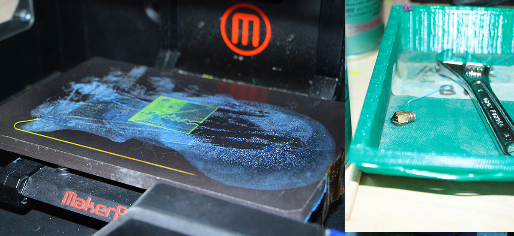

3D Scanning and printing
Non subtractive process
All the student have to design and 3D print an object (small, few cm) that could not be made subtractively.They also have to 3D scan an object
3D printing, also known as additive manufacturing (AM), refers to various processes used to synthesize a three-dimensional object. In 3D printing, successive layers of material are formed under computer control to create an object.[2] These objects can be of almost any shape or geometry and are produced from a 3D model or other electronic data source. A 3D printer is a type of industrial robot.Substractive/aditive?
Not everything is smooth
Looking for a 3D printer troubleshooting guide to avoid common 3D printing issues? These are the 16 most common 3D printing problems and their solutions  #1: Warping What’s the problem? At the base of the model, one or more corners lift up so they are no more level with the print platform. This can also result in horizontal cracks in upper parts.
#2: Elephant FootWhat’s the problem? The base of the model (i.e., the first layers) is wider than wanted. Lets check some more in this linkSome times if you run hard looking for the best settings you have to wait longtime to pick up the results, but they are awesome!